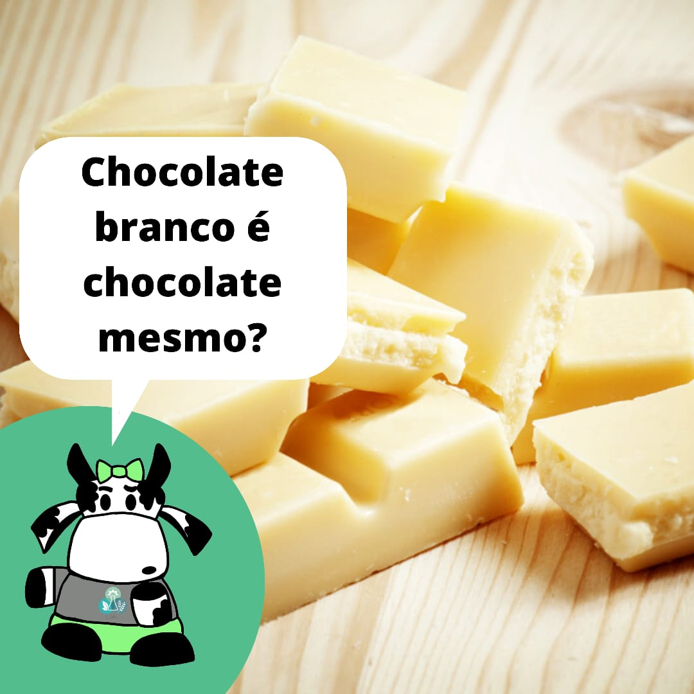
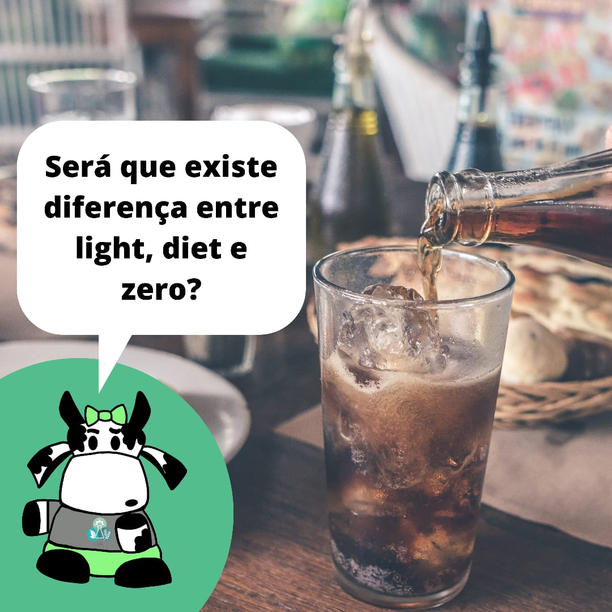
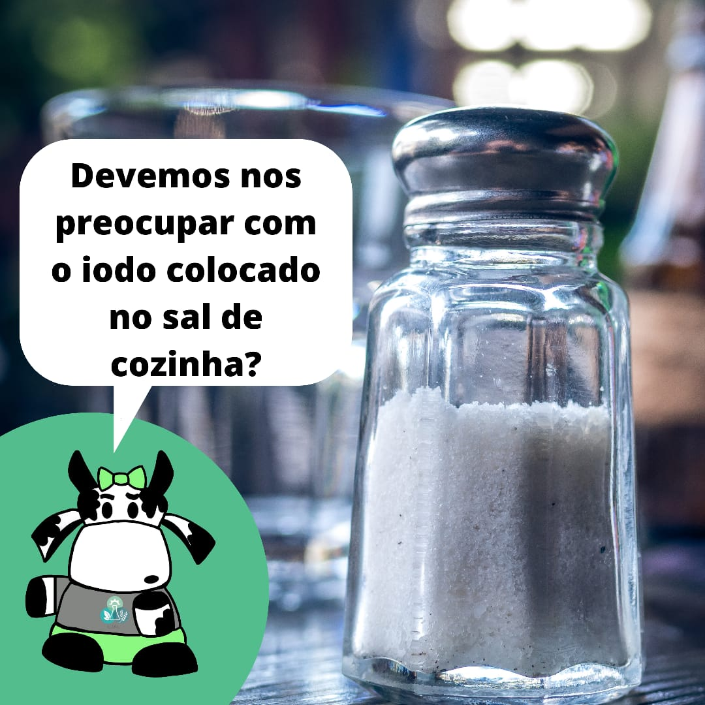
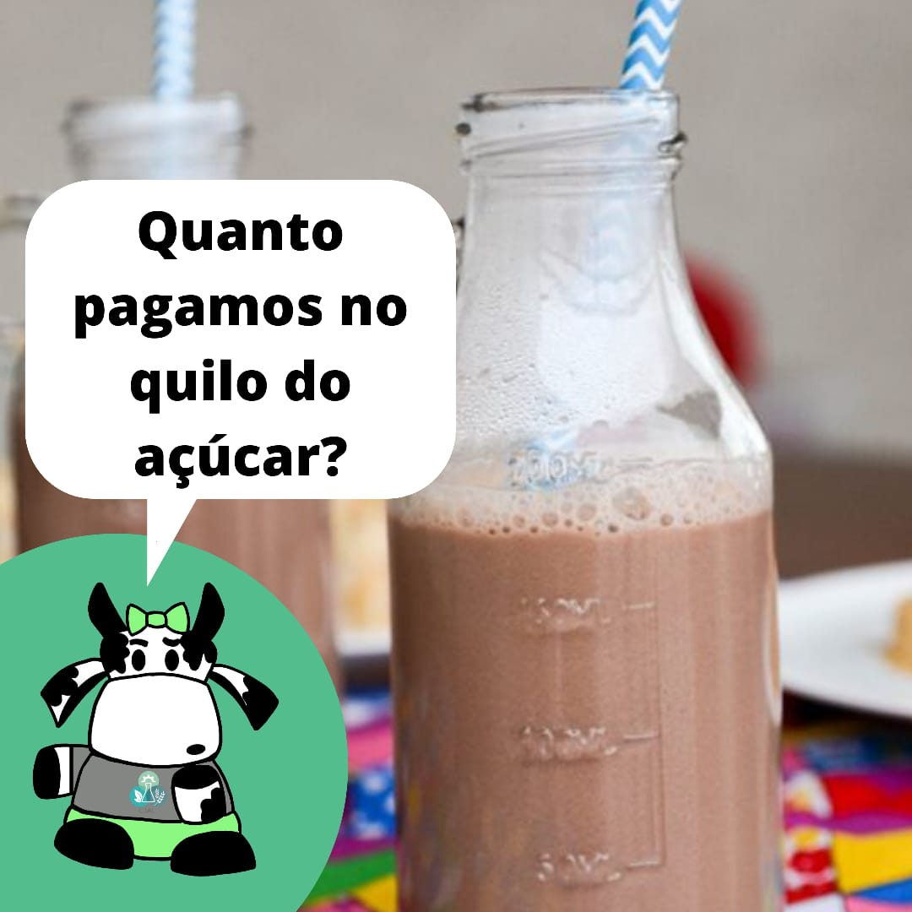
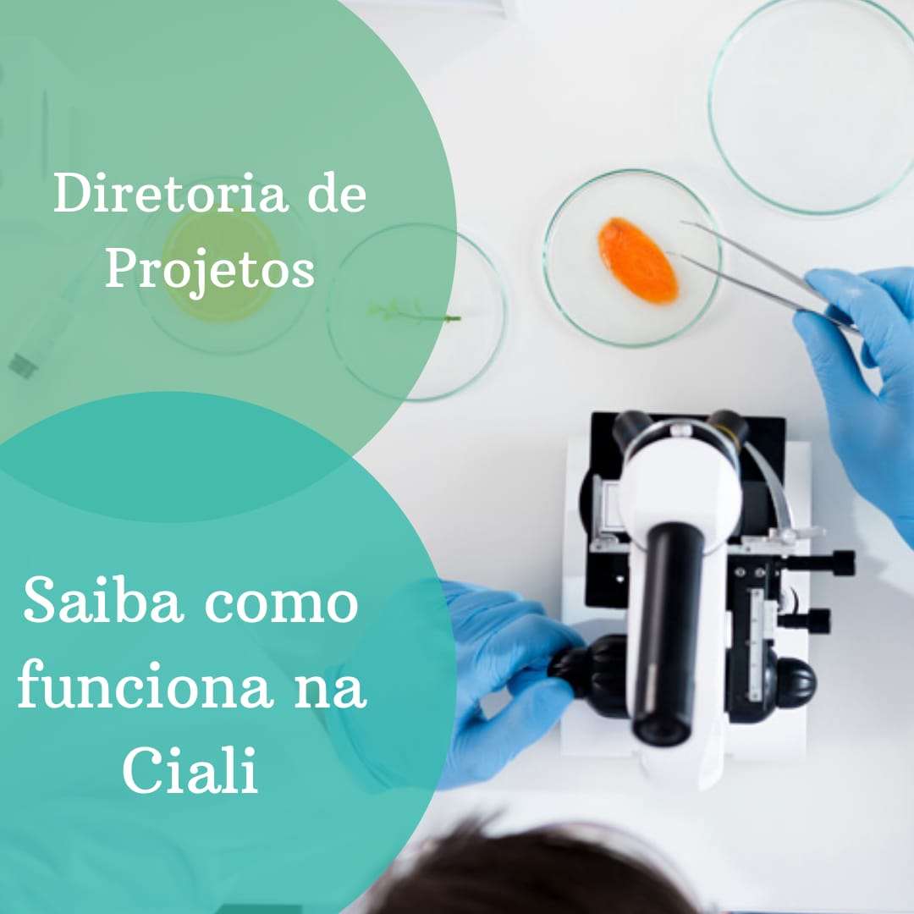
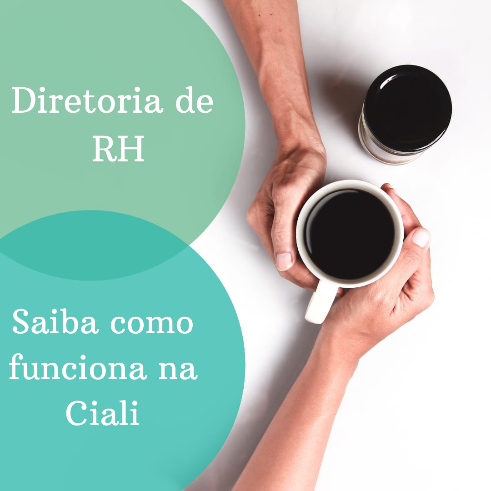

Por que contratar a CiAli?
Venha conhecer as vantagens de nos contratar para alavancar seu negócio.
Saiba mais


Processo seletivo aberto - confira nosso edital e inscrição.
Estão abertas as inscrições para nosso processo seletivo.
Saiba mais
Funcionamento da Ciali - Diretoria de comunicação
Bem vindos ao novo quadro quinzenal em que vamos mostrar como é o funcionamento da empresa! A cada postagem mostraremos uma diretoria diferente. Essa semana conheça a diretoria de comunicação.
Saiba mais


#CiciExplica - Será que consumimos mel mesmo?
Atualmente uma onda de produtos naturais vem aumentando cada vez mais, com isso, o mel está ganhando mais espaço. Mas será que o que consumimos é realmente mel? Cici explica o que é o produto que colocamos em nossa mesa.
Saiba mais
#CiciExplica - Chocolate branco é chocolate mesmo?
Se o cacau é marrom, por que o chocolate branco é chamado de chocolate? Será que é feito de cacau também? Qual a diferença entre as cores? Cici responde todas as perguntas a seguir.
Saiba mais


#CiciExplica - Será que existe diferença entre light, diet e zero?
Para os curiosos que vieram saber se realmente existe a diferença entre diet, light e zero, aqui está a resposta: tem e não tem. Nossa vaquinha Cici responde essa e outras perguntas no artigo de hoje. Leia abaixo.
Saiba mais
Funcionamento da Ciali - Diretoria de administrativo/financeiro
Bem vindos ao novo quadro quinzenal em que vamos mostrar como é o funcionamento da empresa! A cada postagem mostraremos uma diretoria diferente. Essa semana conheça a diretoria de administrativo e financeiro.
Saiba mais

#CiciExplica - Devemos nos preocupar com o iodo colocado no sal de cozinha?
Todas marcas de sal de cozinha encontrados em supermercados apresentam a característica “iodado” escrito na embalagem. Isso ocorre porque o realçador de sabor foi escolhido para suplementar a quantidade diária necessária do iodo no organismo para funcionamento normal.
Saiba mais
Funcionamento da Ciali - Diretoria de comunicação
Bem vindos ao novo quadro quinzenal em que vamos mostrar como é o funcionamento da empresa! A cada postagem mostraremos uma diretoria diferente. Essa semana conheça a diretoria de comunicação.
Saiba mais
#CiciExplica - Podemos misturar bebidas fermentadas com destiladas?
Para quem gosta de consumir bebidas alcoólicas viemos desmitificar um comentário bem comum: "não pode misturar fermentado com destilado". Clique no botão abaixo e leia nosso arigo sobre o assunto.
Saiba mais
Funcionamento da Ciali - Diretoria da Presidência
Bem vindos ao novo quadro quinzenal em que vamos mostrar como é o funcionamento da empresa! A cada postagem mostraremos uma diretoria diferente. Essa semana conheça a diretoria da Presidência.
Saiba mais

#CiciExplica - Quanto pagamos no quilo do açúcar?
Já parou pra pensar nos produtos que você compra? Indo além de qual marca é melhor? De qual marca deixa o leite achocolatado mais escuro? Ou qual tem o gosto melhor e mais doce? Vamos trazer outro fatos que pode influenciar na sua compra.
Saiba mais
Funcionamento da Ciali - Diretoria da Projetos.
Bem vindos ao novo quadro quinzenal em que vamos mostrar como é o funcionamento da empresa! A cada postagem mostraremos uma diretoria diferente. Essa semana conheça a diretoria de Projetos.
Saiba mais

#CiciExplica - Ômega 3 é tão inalcançável assim?
O ômega-3 é o ácido graxo mais popular. Está sempre nas mídias como um produto fora de nosso alcance dietético. Mas será que é tão fora da realidade? Hoje nossa vaquinha Cici irá explicar tudo sobre este assunto. Leia abaixo.
Saiba mais
Funcionamento da Ciali - Diretoria de Recursos Humanos.
Bem vindos ao novo quadro quinzenal em que vamos mostrar como é o funcionamento da empresa! A cada postagem mostraremos uma diretoria diferente. Essa semana conheça a diretoria de Recursos Humanos.
Saiba mais

#CiciExplica - Será que comemos papelão na salsicha?
Para inaugurar esse novo quadro quinzenal viemos com a ajuda da Cici te explicar algumas verdades. Se você também é daqueles que acredita que a salsicha é feita com papel, papelão, jornal ou derivados, vem com a Ciali descobrir o que é a salsicha com celulose e acabar com esse mito! Leia abaixo.
Saiba mais